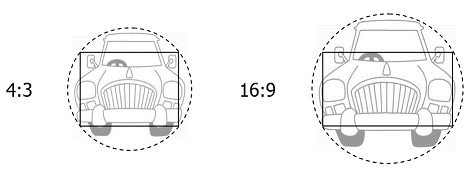

|
 previous / next column previous / next column
A PHYSICIST WRITES . . .
(March 2015)
There may well be enough Matters Arising from last month's column to fill this one! Let's see how it goes:
If you remember, I reported that my VW Golf had given me (most helpfully, I thought) a "Low Battery" warning. I might mention first that the car is only five years old, and is already on a replacement battery supplied by the RAC, according to its label, before I acquired the car in 2013 - which doesn't seem to say much for the one originally installed by VW.
Anyway, this battery has an indicator window on top which should show green when the battery is well-charged, which it was certainly doing previously whenever I checked. But last month it had turned black. Below the window I assume there's a green hydrometer-float, which sinks when the charge and the acid are below strength, and rises again when all is well.
So I connected up my simple battery-charger and left it on for most of the day - but the indicator stayed black. I was about to go for a replacement battery, when I glanced at my Haynes manual and there read: "Maintenance-free batteries can take up to three days to recharge fully." The reason (as I used to know) is that they need to be charged at a low rate. Which is just what my charger was doing. So I let it get on with the job for another day, after which the battery was nicely green (in the window). And I'm pleased to say it still is, a month later.
You can probably guess, then, that it's quite a while since I last suffered a Low Battery! The episode reminded me that the standard lead-acid battery was invented more than 150 years ago, and still really hasn't been bettered - as a small, relatively cheap rechargeable power-source - for delivering the brief high current that's needed for starting vehicle engines.
(But what about modern batteries based on lithium, do I hear you ask? The difference with these is that they can store much more energy, in a given space and within a given weight, than the lead-acid type. It's this property that has allowed the development of electric cars, and likewise of electric bicycles.)
Another thing I said last month was that I was struggling to get used to the black keyboard belonging to my new PC: the keys were flat and hard to see, and depressed only a short distance, which for me made touch-typing almost impossible. I've now overcome the problem in two stages! First, Mrs S found from somewhere in the house a long soft wrist-rest: this not only makes typing more comfortable, but also reduces the tendency for my fingers to slide out of position.
And then on a reader's recommendation I bought a cheap and cheerfully bright yellow keyboard - I mean the keys are yellow, almost shouting their letters at you. They are dished too, and go down a good way, so my fingers easily stay in place over them. If you want to try out this keyboard, it's currently available for £14 from Amazon: just search the site for Great Ideas Keyboard. It has a USB plug, and I'm assured it works equally well with an Apple Mac. (The keyboard does slide around on a smooth surface, so will need something under or against it to stop this.)
My next Matter Arising is TV screens. I said that we had upgraded at home from a big old TV with proportions of 4:3, to a flat-screen one with the wide but now standard 16:9 ratio. Afterwards it took me quite some time to reset all our other equipment (DVD player, digital recorder etc) to suit the new TV format, in order to get an un-squashed-or-stretched picture from each source! But it now occurs to me that although the wider screen gives the impression that it's showing you more (compared with 4:3), in a way you're seeing less.
Let me explain: TV screens are rectangles, and so are the image-sensors inside TV cameras and indeed any camera. The reason for this is that it's the easiest shape both to manufacture and to utilize for the image-processing. But camera lenses are round, which is the best shape for designing and for operating them. Hence they project a circular image on to the sensor inside the camera. And of course this image (or to be precise, the usable centre-region of it) has to be big enough to cover the sensor rectangle:

The diagrams show firstly that quite a fraction of the area of the image from the lens is lost, by falling outside the sensor, and secondly that more of it (46% in fact) is missed now that everything is in 16:9 format, than in the past when it was all 4:3 (39%). I suppose what I'm really saying is that if television had evolved to keep the circular sensors and screens that it actually started with, long ago, we would be able to view all of the image that the lens captures. As it is, we can't!
Finally, last month I mentioned optical illusions. I've just been reading about a night-time one that caused a serious accident in California a few years ago. A driver was on a straight unlit minor road, approaching a curving major road at a shallow angle. He was focusing on distant vehicle lights (and then traffic lights beyond) on the main road, and assumed that the two roads simply merged. But in reality, there was a sharp bend into a T-junction: he failed to see it in time, and went over an unprotected edge into a deep ditch.
Actually the roads did once merge smoothly. After the T-junction had been installed there had been other (less severe) accidents. The local authority therefore not only settled for a $1.6m injuries payment in this case, but also improved the signage and to some extent the bend-protection (as I've confirmed on Google Street View!).
But here's a question: how often do you look into the distance at night, focusing your attention on distant lights that indicate a continuation of your road, and assume that 'seeing nothing' between here and there means that nothing will interrupt your journey...?
Peter Soul
previous / next column
|